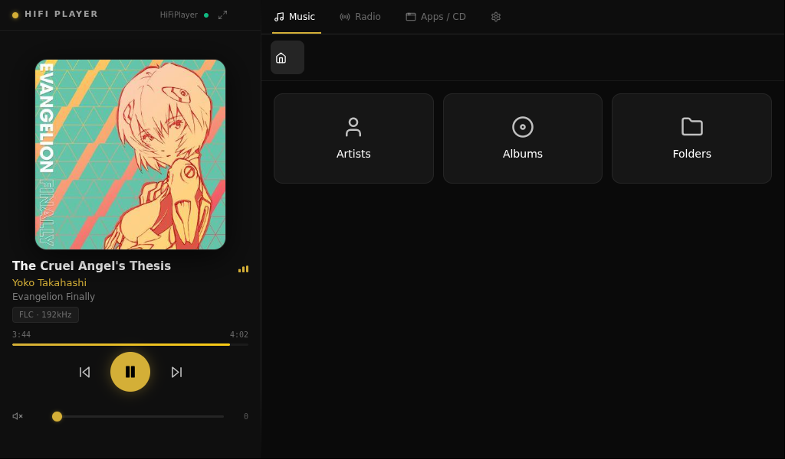

A touchscreen-first hi-fi media appliance built on Debian for x86 hardware. Bit-perfect audio, streaming services, and OTA updates — all in one sleek dark interface.
Built for audiophiles who want a dedicated, appliance-grade media server without the complexity.
Native playback of FLAC, DSD, and PCM up to 192kHz. Bit-perfect DoP output over USB — no resampling, no compromise.
Integrated access to Deezer, Qobuz, TIDAL, and Spotify — unified in one interface, no app switching.
Browse your local collection by Artist, Album, or Folder. Fast indexing powered by Lyrion Media Server.
Built-in radio browser with thousands of stations worldwide. Save favourites directly from the touchscreen interface.
Automatically detects USB DACs and audio interfaces. Switch outputs on the fly with persistent selection across reboots.
Signed over-the-air updates for UI, API daemon, and OS. Switch between Production and Development channels from settings.
Optimised for touchscreens. Clean, dark, distraction-free.

| Hardware | x86 / x86-64 |
| OS | DietPi (Debian-based) |
| Interface | Electron + React |
| Backend | Node.js API daemon |
| Media server | Lyrion Media Server |
| Update system | Signed OTA (Ed25519) |
| License | MIT |
| Formats | FLAC, DSD, MP3, AAC, WAV, AIFF |
| Max resolution | 32-bit / 192kHz PCM |
| DSD support | DSD64, DSD128, DSD256 (DoP) |
| Output | USB DAC, HDMI |
| Playback mode | Bit-perfect (no resampling) |
| VU meters | Analog-style real-time display |
| Streaming | Deezer, Qobuz, TIDAL, Spotify |
Download the latest release from GitHub. Once installed, OTA keeps everything up to date automatically from the Settings screen.